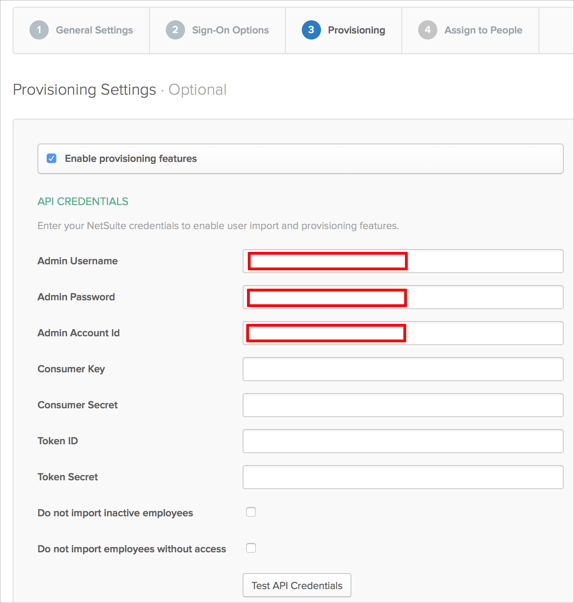
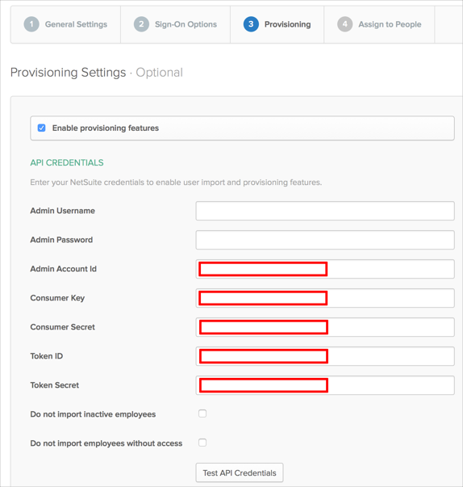
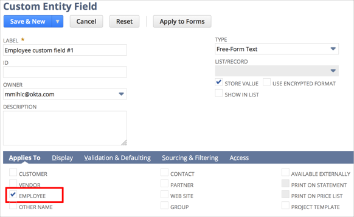
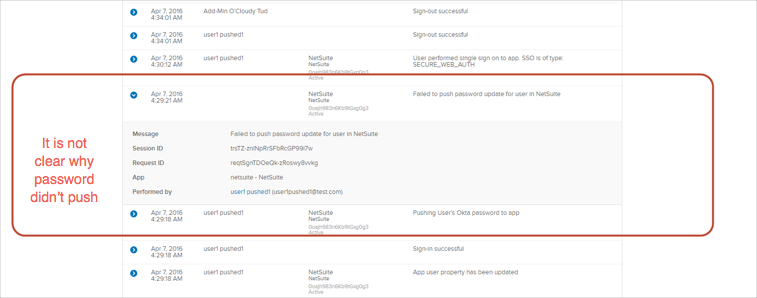

Netsuite as Profile Master, Token Based Authentication, and Universal Directory support (PROV_NETSUITE_ENABLE_UD flag) are all Early Access features. Contact Okta Support to enable them.
This guide provides the steps required to configure Provisioning for NetSuite and includes the following topics:
The following provisioning features are supported:
Note: If you already have setup NetSuite application with Admin Username and Admin password authentication, your existing settings will still work. However if you need to change any provisioning settings, you will have to switch to Token Based authentication.
Complete the following before you configure provisioning for NetSuite:
Enable the Web Services feature (The NetSuite web services feature needs to be enabled prior to submitting web services requests):
Log in to NetSuite as an administrator.
Navigate to Setup > Company > Enable Features.
Select the SuiteCloud subtab.
Check the Web Services box.
Click Save.
Obtain your AccountID:
Still logged into NetSuite as an administrator.
Navigate to Setup > Integration > Web Services Preferences.
Copy and save your Account ID as shown below:

Setup Token Based authentication (TBA):
Note: You require a NetSuite account to access the links referenced in this step.
Follow the steps in this Getting Started with Token-based Authentication guide, and save your consumer key and consumer secret.
Enabling the Token-based Authentication Feature
Setting Up Token-based Authentication Roles
Assigning Users to Token-based Authentication Roles
Create a TBA Token by following the instructions in Access Token Management - Create and Assign a TBA Token instructions in the Managing TBA Tokens guide and save your Token Id and Token secret.
Configure your Provisioning settings for NetSuite as follows:
Check the Enable provisioning features box.
Enter your NetSuite API Credentials as follows:
If PROV_NETSUITE_ENABLE_UD is disabled:
Admin Username.
Admin Password.
Admin Account ID.

If PROV_NETSUITE_ENABLE_UD is enabled:
See Requirements for instructions on obtaining these fields.
Admin Account ID.
Consumer Key.
Consumer Secret.
Token ID.
Token Secret.

Scroll down and select the Provisioning Features you want to enable.
Click Save.
You can now assign people to the app (if needed) and finish the application setup.
User Provisioning Notes:
If you have the PROV_NETSUITE_ENABLE_UD feature flag enabled for your org, Okta offers the added functionality to set the Employee's Supervisor attribute. This attribute can only be set for users who are imported into Okta from Active Directory. The Employee's Supervisor attribute maps to the supervisor's User ID in Netsuite.
If you are setting up Netsuite as Master, inactive users and users with insufficient access levels in Netsuite will be deactivated in Okta if you have the following provisioning options enabled in Okta:
Do not import inactive users
Do not import users without access
If you already have setup NetSuite application with Admin Username and Admin password authentication, your existing settings will still work. However if you need to change any provisioning settings, you will have to switch to Token Based authentication.
In order to use schema discovery, make sure you have the UD feature flag PROV_NETSUITE_ENABLE_UD enabled and authorization tokens (Customer Key, Customer Secret, Token Id, Token Secret) are provided before you create your app instance.
NetSuite supports User's Schema Discovery, so you can add some extra attributes to User's Profile, to do that, follow the instructions below:
Before you begin, note that the following Custom Entity fields are supported:
Email Address
Phone Number
Text Area
Long Text
Rich Text
Free-Form Text
Hyperlink
Integer Number
Date
Date/Time
Percent
Currency
Decimal Number
Check Box
To add extra attributes to a User’s Profile:
Ensure you have selected EMPLOYEE in the Applies To section in NetSuite side for the Custom Entity field you want to use.

In Okta, from the Admin dashboard, select Directory > Profile Editor.
Select the APPS section in the left navigation bar, then find your app in the list.
Check the list of attributes, and if you decide you need more, click Add Attribute. A list of extended attributes will appear:

Select the attributes you want to add, then click Save.
You can now import and push these user attribute values to/from Netsuite.
Password Push Policy:
OKTA and NetSuite share the same password policy and NetSuite will not accept any password that are simple such as ABCD1234. If you do push a password as such you will run into the issue above.

If you are in the process of creating a NetSuite app instance with PROV_NETSUITE_ENABLE_UD provisioning feature turned on, you will encounter an error similar to the following during the app assignment flow.

The workaround for this is to first create the app instance without assigning it to any user/group. Once the app instance exists, you can then assign the app to the respective people by either:
By User: From the Okta admin dashboard, navigate to Directory > People then assign apps to users.
By Application: From the Okta admin dashboard, navigate to Applications then assign apps to users.
Make sure that the attribute subsidiary has dependency on department. There are not all departments available for each type of subsidiary and as result you may see an error during Push New Users or Push Profile updates, as shown below:

For applications with disabled PROV_NETSUITE_ENABLE_UD feature flag only. When you are changing Subsidiary property for user on OKTA side the Department field will be reset on NetSuite side.
In case of problems with Pushing Profile Updates to NetSuite after enabling the PROV_NETSUITE_ENABLE_UD flag (for example, you do not have permissions to set value for element subsidiary), then this flag should be disabled.